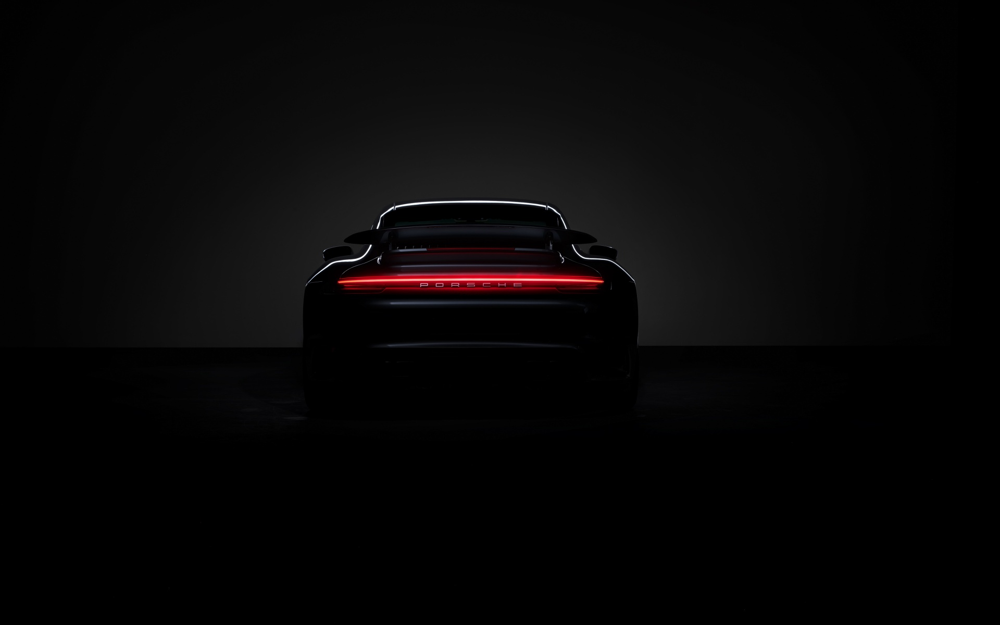

|

|
The Porsche 911 GT3: A High-Performance Sports Car
Test Drive
|

|
Introduction
The Porsche 911 GT3 is a high-performance sports car that has garnered a reputation for its exceptional driving dynamics, precision engineering, and track-focused capabilities. As part of the iconic Porsche 911 lineup, the GT3 variant is designed to deliver an exhilarating driving experience both on the road and on the racetrack.
|
Engine and Performance
The GT3 is powered by a naturally aspirated 4.0-liter flat-six engine that produces impressive horsepower and torque figures. This engine is renowned for its high-revving nature, delivering exhilarating performance on both the road and the track. The GT3 typically comes with a six-speed manual transmission, although some models offer a dual-clutch automatic option for quicker shifts.
|
Handling and Suspension
The Porsche 911 GT3 is celebrated for its exceptional handling characteristics. It features a rear-engine layout, which contributes to its unique driving dynamics. The car is equipped with a sophisticated suspension system that includes adaptive dampers, allowing drivers to adjust the ride stiffness based on their preferences and driving conditions. The GT3 also boasts a rear-wheel-drive configuration, enhancing its agility and cornering capabilities.
|
Design and Aerodynamics
The design of the Porsche 911 GT3 is both functional and aesthetically pleasing. It features a sleek and aerodynamic body with distinctive styling cues that set it apart from other 911 variants. The GT3 often includes a prominent rear wing, front splitter, and rear diffuser, all of which contribute to improved downforce and stability at high speeds.
|
MORE OF US


Joel Jawak Production
Gas kan bree follow
|